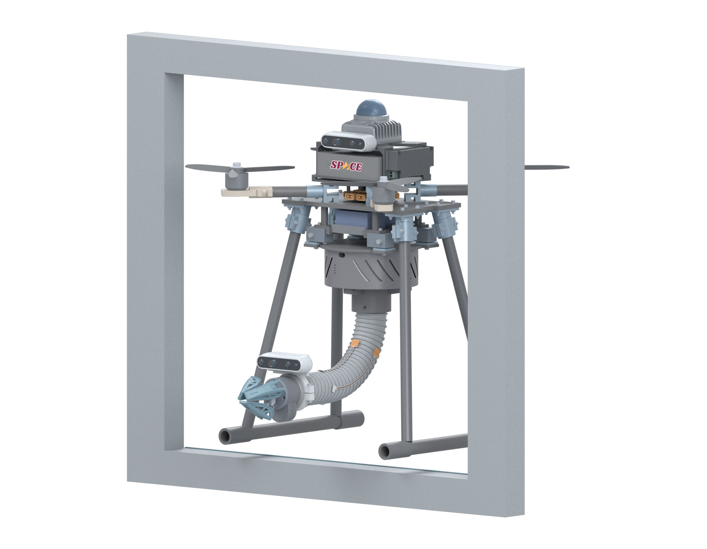

E1 · 柔性臂分段与积分核查 · 11-18 18:19
把柔性臂从 8 段加密到 24 段，夹爪轨迹变了多少
同一固定机身弯臂动作运行六次。8 段与 24 段的夹爪最大间距为 1.121 mm，16 段与 24 段为 0.175 mm。当前工况可保留 8 段。
2 张图 · 1 段视频 · 2 份 PDF

实验档案 / 组会资料
从一个问题开始，查看当轮的模型、曲线、视频和论文页。每轮材料独立保存，也可以整包下载，离线投屏。
同一固定机身弯臂动作运行六次。8 段与 24 段的夹爪最大间距为 1.121 mm，16 段与 24 段为 0.175 mm。当前工况可保留 8 段。
2 张图 · 1 段视频 · 2 份 PDF
把 SUPER 机架、长起落架和 Qingyu 臂接入规划与接收检查。34 项检查符合预期；正常高度的候选通过，两条触及门槛的低空路线和一条中途自碰的弯臂动作被拒绝。
4 张图 · 1 段视频 · 3 份 PDF

以原生总装为参照核对机身相机，把末端相机放回夹爪上方；保存修正后固定机身与悬停两种条件的积分记录。
5 张图 · 2 段视频 · 3 份 PDF

保存第一次统一 SUPER 机架与柔性臂后的外观、碰撞包络和两段积分录像，供与修正后的安装位置对照。
3 张图 · 2 段视频 · 1 份 PDF


用同一条 PX4/Gazebo 仿真记录对照弯臂与直臂，并把七个滚动窗口的接续还原到同一时间轴。
2 张图 · 1 段视频 · 1 份 PDF